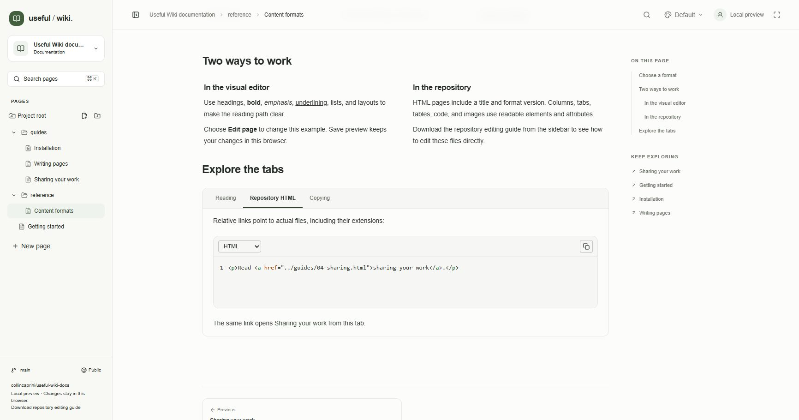

A Useful Wiki page is a repository file. You can edit it with the browser editor, a text editor, GitHub, or a coding agent. HTML pages have no synchronized JSON sidecar: the HTML file is the source of truth.
Read the repository's instructions, including AGENTS.md. Work on the project's configured branch and inside its content folder.
For this documentation set, the intended repository is collincaprini/useful-wiki-docs, branch main, content folder docs.
Change only the requested pages and assets. Review the diff, check links, and preview the result before committing.
Publish the changes to the branch read by the connected project, then reopen or reload the page in Useful Wiki.
The sidebar's Download repository editing guide action downloads USEFUL_WIKI.md for another project or coding agent. Use the installed application's source when verifying a capability: src/editor/extensions.ts configures headings h1 through h6, even if an older downloaded guide lists fewer levels.
<!DOCTYPE html>
<html lang="en">
<head>
<meta charset="utf-8">
<meta name="useful-wiki-format" content="1">
<title>A useful page</title>
</head>
<body>
<p>Start with the answer.</p>
<h2>Next steps</h2>
<p>Read the <a href="01-getting-started.html">getting started guide</a>.</p>
</body>
</html>
Save UTF-8. Keep the format marker at 1 and the title between 1 and 200 characters. The app displays the title separately from the body, so a duplicate body heading is unnecessary. The filename determines the file path and URL; changing the title does not rename the file.
Put structural blocks on separate lines for readable diffs. Preserve prose spacing, inline marks, and code indentation. Escape text and attribute values correctly, including &, <, and ". Keep each document within the 700 KB limit.
Use paragraphs, headings h1–h6, bold, italic, underline, strikethrough, links, inline code, lists, checklists, blockquotes, horizontal rules, tables, images, columns, and tabs. Preserve existing supported style and semantic data-* attributes. Arbitrary application HTML, scripts, external stylesheets, iframes, executable embeds, and SVG rendering are not supported.
Headings generate the page's contents navigation. Explicit heading IDs are preserved, while automatically generated anchors follow heading text and distinguish duplicates. Keep intentional IDs stable when other pages link to them.
<pre><code class="language-python">print("hello")
</code></pre>
<img src="assets/example.png" alt="A diagram of the save flow" width="480">
<p><a href="guides/writing.html">Writing guide</a></p>
Keep code whitespace intact. Store image files separately and use descriptive alternative text. Resolve image and page links relative to the current document; a nested page may need ../assets/example.png. Do not save session-bound /api/projects/... image URLs into repository files. When moving a file or folder, update affected inbound links and relative asset paths.

This local-preview Content formats example has Repository HTML selected to compare a relative link's source with its rendered result. Save preview keeps edits in the browser; Save to repository publishes a commit in a connected project.
<div data-type="columns" data-widths="[50,50]" style="display:grid;grid-template-columns:minmax(0,50fr) minmax(0,50fr);gap:24px">
<div data-type="column"><p>Left column.</p></div>
<div data-type="column"><p>Right column.</p></div>
</div>
Use two to four columns. Keep one positive data-widths value per column, or null for equal widths. Preserve both the semantic attributes and layout styles.
<section data-type="tabs">
<section data-type="tab-panel" data-label="Overview">
<h4 data-tab-heading="" contenteditable="false">Overview</h4>
<div data-tab-content=""><p>Overview content.</p></div>
</section>
</section>
Use one to eight panels with labels up to 40 characters. Keep data-label and its fallback heading in agreement. Edit all relevant panels, including inactive ones; the active tab is presentation state rather than saved content.
Use table, tbody, tr, th, and td. Preserve cell colspan, rowspan, colwidth, and style attributes when editing text.
Checklists use <ul data-type="taskList"> with <li data-type="taskItem" data-checked="true"> or data-checked="false". Item content belongs in the item's inner div. Keep existing checkbox-label markup when present.
Markdown files stay Markdown, with their code fences, headings, tables, lists, and relative links. The first level-one heading supplies the displayed page title. HTML metadata applies only to HTML pages.
Existing .wiki.json pages contain a version-1 object with title and a Tiptap document tree. Renaming one to .html is not a conversion. The new-page dialog offers HTML and Markdown; it does not automatically migrate older pages.
Browser saves use the file's original SHA. If a repository edit lands while someone is writing, their save may conflict. Preserve or download the draft, compare it with the latest repository file, and reconcile both changes. Do not silently replace the original revision to overwrite another person's work.
To share content with an LLM, Copy as Markdown includes the title and the whole document, including inactive tabs, columns, code, tables, and image references. It omits visual styling and embedded image bytes. If clipboard access is denied, the app offers selectable text for manual copying.
See contributing for validation and repository boundaries, Markdown and portable files for format details, or return to the guide index.